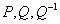
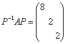
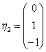

5.4 实对称矩阵的相似标准形
一、实对称矩阵的相似标准形
| 在第二章中，我们把满足的n阶实方阵称为n阶实对称矩阵，这一类矩阵在相似对角化问题上，有些特殊之处，首先来看实对称矩阵的特征值与特征向量的特点。
证：首先说明当 |
说明：（1）当A为实对称矩阵，则A必可正交相似对角化。 （2）当n阶实方阵A可正交，相似对角化时，A必为对称矩阵。 （3）由实对称矩阵必可对角化，故n阶实对称矩阵A必有n个线性无关的特征向量，即属于每一个特征值的线性无关特征向量个数一定与此特征值的重数相等，它就是用来求特征向量的齐次线性方程组的一般解中自由未知量个数，也就是该齐次线性方程组的基础解系中所含向量的个数。 （4）我们已知两个相似的矩阵一定有相同的特征值，而有相同特征值的两个同阶方阵未必相似，但对于实对称矩阵，有相同特征值的两个同阶方阵一定相似。 |
证：设n阶实对称矩阵A，B有相同的特征值 ，于是必有，也就有 ，因为都是正交矩阵，所以也是正交矩阵， 就证明了A与B正交相似。 |
|
例1：设求正交矩阵P，使 解： A的三个特征值为 对，由，得单位特征向量。 对，由，得单位特征向量。 对，由，得单位特征向量。 因为三个特征值两两互异，所以两两正交。 令为正交矩阵，而且有。 |
|
例2：设，（1）求A的相似标准形；（2）求A的正交相似标准形。 解：（1）求A的相似标准形，就是求可逆矩阵P，使 A的特征方程，所以A的三个特征值为 对，由解方程组，可得属于它的特征向量为 对，由解方程组 ，则得可逆矩阵 使。 |
|
（2）求A的正交相似标准形，就是求出正交矩阵P，使 用两种方法求出所需正交矩阵 ①施密特正交化方法 把在（1）中已找出的三个线性无关特征向量标准正交化。 由于是属于一重特征值的特征向量，只要把单位化，得，又已与正交，只要把正交化单位化即可。 令，单位化得。 ，单位化得。 于是有正交矩阵，使。 ②直观方法 同例2求出属于一重特征值的特征向量，在求属于二重特征值的特征向量时，用直观方法求正交解。 因属于的特征向量都应是方程组 由，故属于的特征向量的分量应满足。 先令，再根据，取，得。 然后找使之与正交，设，由于在中已有，所以可取 这时求出的为A的属于二重特征值的正交特征向量。 再把三个两两正交特征向量单位化，可得到正交矩阵，有 。 说明：实对称矩阵一定可以正交相似对角化，我们在不计对角矩阵中对角元的排列次序条件下，它的正交相似标准形是唯一的，但所用的正交矩阵却不是唯一的。 |
|
例3：设三阶实对称矩阵A的特征值为，已知A的属于的特征向量为 ，求出A的属于特征值的特征向量，并求出对称矩阵A。 解：因属于对称矩阵的不同特征值的特征向量相互正交，所以属于的特征向量必与 正交，即它们一定满足，可以任取。 对此，可取线性无关解，，则 ，有，则 。 注：这里不需要求正交矩阵P，来把A对角化只要找可逆矩阵P就够了，所以没有必要把正交单位化。 |
请认真答题，测试一下你对前面知识点的学习情况！
(单选题) 24．设3阶实对称矩阵A的特征值为，则=（ ）。
【答案】C
【解析】由题意知A与对角阵相似,故.
【知识点】对称矩阵基本定理